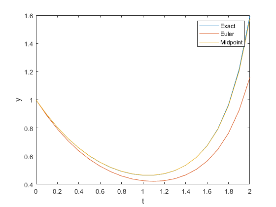

clc;
close all;
clear;
h=0.1;
f=@(t,y) y*t^2-1.1*y;
y0=1;
t=0:h:2;
y_eu(1)=y0;
y_mid(1)=y0;
for i=2:length(t)
yeu=y_eu(i-1)+h*f(t(i-1),y_eu(i-1));
y_eu(i)=yeu;
k1=h*f(t(i-1),y_mid(i-1));
k2=h*f(t(i-1)+h/2,y_mid(i-1)+k1/2);
ymid=y_mid(i-1)+k2;
y_mid(i)=ymid;
end
exact=exp((t.^3-3.3*t)/3);
plot(t,exact)
hold on
plot(t,y_eu)
plot(t,y_mid)
xlabel('t')
ylabel('y')
legend('Exact','Euler','Midpoint')
hold off
h=0.5;
y0=1;
t0=0;
while t0<2
k1=h*f(t0,y0);
k2=h*f(t0+h/2,y0+k1/2);
y=y0+k2;
y0=y;
t0=t0+h;
end
disp('y(2)=')
disp(y)
y(2)=
1.364266861934474
